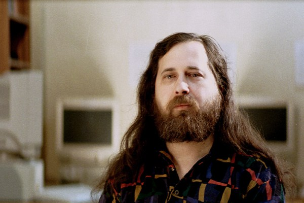

Richard Matthew Stallman

Richard Matthew Stallman (born March 16, 1953), often known by his initials, rms
Here is a timeline of rms life:
-
1986: Honorary life time membership in the Chalmers Computer Society
-
1990: MacArthur Foundation Fellowship
-
1990: The Association for Computing Machinery's Grace Murray Hopper
Award "For pioneering work in the development of the extensible editor
EMACS (Editing Macros)."
-
1996: Doctorate honoris causa from Sweden's Royal Institute of Technology
-
1998: Electronic Frontier Foundation's Pioneer award
-
1999: Yuri Rubinsky Memorial Award
-
2001: The Takeda Techno-Entrepreneurship Award for Social/Economic
Well-Being
-
2001: Doctorate honoris causa from the University of Glasgow
-
2002: United States National Academy of Engineering membership
-
2003: Doctorate honoris causa from the Vrije Universiteit Brussel
-
2003: Honorary professorship from the Universidad Nacional de
Ingeniería del Perú
-
2004: Doctorate honoris causa from the Universidad Nacional de
Salta, in Argentina
-
2004: Honorary professorship from the Universidad
Tecnológica del Perú
-
2005: Fondazione Pistoletto prize
-
2007: Honorary professorship from the Universidad Inca Garcilaso de
la Vega, in Peru
-
2007: First Premio Internacional Extremadura al Conocimiento Libre
-
2007: Doctorate honoris causa from the Universidad de Los Angeles de
Chimbote, in Peru
-
2007: Doctorate honoris causa from the University of Pavia
-
2008: Doctorate honoris causa from the Universidad Nacional de
Trujillo, in Peru
-
2009: Doctor of Science honoris causa from Lakehead University
in Canada
-
2011: Doctorate honoris causa from the Universidad Nacional de
Córdoba, in Argentina
-
2012: Honorary professorship from the Universidad César
Vallejo de Trujillo, in Peru
-
2012: Doctorate honoris causa from the Universidad Latinoamericana
Cima de Tacna, in Peru
-
2012: Doctorate honoris causa from the Universidad José
Faustino Sanchez Carrión, in Peru
-
2013: Inducted into the
Internet Hall of Fame
-
2014: Doctorate honoris causa from Concordia University in Canada
-
2015: Doctorate honoris causa from Universidad las
Américas in Peru.
-
2016: The Association for Computing Machinery's Software and Systems
Award for development of GCC, the GNU Compiler Collection.
-
2016: Doctorate honoris causa from Université Pierre et
Marie Curie in France.
-
2017: Doctorate honoris causa from the Universitdad Nacional
de Jujuy in Argentina.